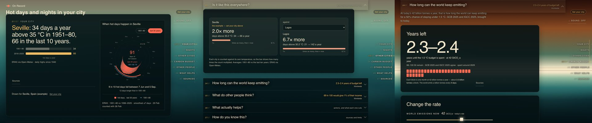

Agosh Baranwal
I run growth for a living: paid, retention, and the plumbing beneath both, for teams in Sweden, Spain and India. The rest of the time I build my own things and finish most of them. Four are live below.
Write to me agosh.baranwal@alumni.esade.edu I reply within a day.I learned growth on the job, at Buyceps, at Abicart in Gothenburg, and at eFeed in Lucknow, then spent two years on the MBA at Esade. Before all of it, IIT ISM Dhanbad, which took some getting into. What taught me most, though, was Washut, the laundry startup I built with friends in college and watched fold. A TEDx licence, a Toastmasters presidency, and an HP Innovation Bootcamp win are in there too. The dates are on .
Skills
Projects
Side projects. Four are live, two in progress.

admenow
Daily-use tools for performance marketers.
admenow.vercel.app
Utsav · उत्सव
A personal food blog, told through hand-drawn scenes with little animations you can click around.
utsav-pi.vercel.app
tvbadger
Honest, personal verdicts on what to watch.
tvbadger.vercel.app
On Record
Live climate data, with every source shown.
github.io/on-recordWitness
A private check-in tool for your own days.
In progressAn air-quality monitor
First hardware. From parts, no kit.
In progressLatest posts
Marketing, food, football, politics.
Write to me
Hiring, building, or disagreeing with something here? Good.
I read every message and reply within a day.